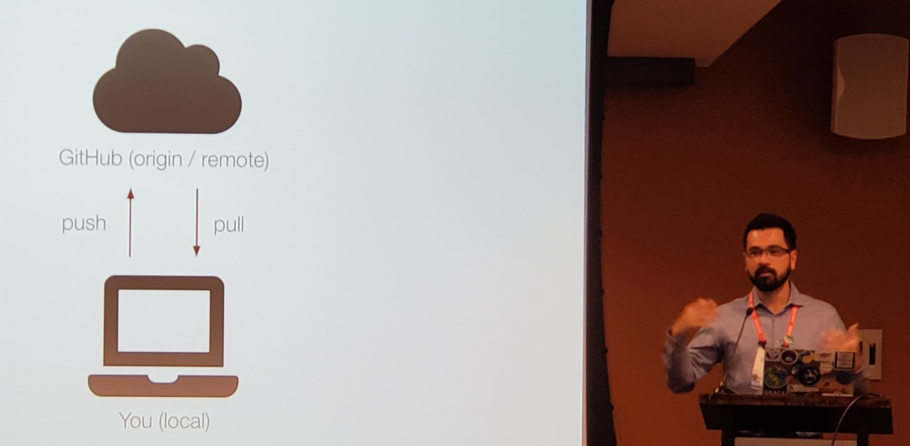

The slightly longer version
I'm first and foremost a Dedicated Involved Loving Father.
On the rare occasions where I find myself with free time, I enjoy
playing Incineroar in Smash Bros Ultimate,
baking sourdough bread,
making noise with my ukulele and off-tune baritone,
listening to podcasts,
and reading sci-fi and fantasy.
My favorite show by far is Avatar: The Last Airbender.
I work as Lecturer in Geophysics at the University of Liverpool's
Department of Earth, Ocean and Ecological Sciences in the UK,
where I'm starting the Computer-Oriented Geoscience Lab.
Before coming to Liverpool, I was a visiting research scholar at the
University of Hawaiʻi at Mānoa, where I worked with the
Generic Mapping Tools team to create PyGMT, a widely-used
Python library for processing and visualizing geophysical data.
Prior to Hawaiʻi, I worked for three years as Assistant Professor at the
Universidade do Estado do Rio de Janeiro, Brazil.
My research and teaching make heavy use of open-source software and computing
in general to gain insights on the inner workings of the Earth.
I am one of the core developers and maintainer of the
Fatiando a Terra project, a community-developed set of open-source
Python libraries for the Geosciences.
Along with my role at the University of Liverpool, I'm also:

Me teaching git and GitHub at AGU2019.
Online
Find out more about me and my work at:
Curriculum Vitae
I keep a full length version of my CV updated and publicly available:
Download my CV in PDF
Curious about the CV template? It's typeset in LaTeX using a custom
template. The source is available from the GitHub repository
leouieda/cv.
Education
PhD in Geophysics
2016
|
Observatório Nacional, Brazil
Thesis: Forward modeling and inversion of gravitational fields in spherical
coordinates
Advisor: Valéria C. F. Barbosa
doi:10.6084/m9.figshare.16883689.v1
PDF
Code
Slides
About
After my Master's degree, I stayed at the Observatório Nacional for my
PhD, also with Valéria C. F. Barbosa.
In 2016, I defended my thesis, which was submitted for publication in 3
parts:
During my PhD, I presented the following yearly seminars:
Abstract
We present methodological improvements to forward modeling and regional
inversion of satellite gravity data. For this purpose, we developed two
open-source software projects. The first is a C language suite of
command-line programs called Tesseroids. The programs calculate the
gravitational potential, acceleration, and gradient tensor of a spherical
prism, or tesseroid. Tesseroids implements and extends an adaptive
discretization algorithm to automatically ensure the accuracy of the
computations. Our numerical experiments show that, to achieve the same
level of accuracy, the gravitational acceleration components require
finner discretization than the potential. In turn, the gradient tensor
requires finner discretization still than the acceleration. The second
open-source project is Fatiando a Terra, a Python language library for
inversion, forward modeling, data processing, and visualization. The
library allows the user to combine the forward modeling and inversion
tools to implement new inversion methods. The gravity forward modeling
tools include an implementation of the algorithm used in the Tesseroids
software. We combined the inversion and tesseroid forward modeling
utilities of Fatiando a Terra to develop a new method for fast non-linear
gravity inversion. The method estimates the depth of the crust-mantle
interface (the Moho) based on observed gravity data using a spherical
Earth approximation. We extended the computationally efficient Bott's
method to include smoothness regularization and use tesseroids instead
right rectangular prisms. The inversion is controlled by three
hyper-parameters: the regularization parameter, the density-contrast
between the real Earth and the reference model (the Normal Earth), and
the depth of the Moho of the Normal Earth. We employ two cross-validation
procedures to automatically estimate these parameters. Tests on synthetic
data confirm the capability of the proposed method to estimate smoothly
varying Moho depths and the three hyper-parameters. Finally, we applied
the inversion method developed to produce a Moho depth model for South
America. The estimated Moho depth model fits the gravity data and
seismological Moho depth estimates in the oceanic areas and the central
and eastern portions of the continent. We observe large misfits in the
Andes region, where Moho depth is largest. In Amazon, Solimões, and
Paraná Basins, the model fits the observed gravity but disagrees with
seismological estimates. These discrepancies suggest the existence of
density-anomalies in the crust or upper mantle, as has been suggested in
the literature.
MSc in Geophysics
2011
|
Observatório Nacional, Brazil
Thesis: Robust 3D gravity gradient inversion by planting anomalous densities
Advisor: Valéria C. F. Barbosa
doi:10.6084/m9.figshare.16882300.v1
PDF
Code
Slides
About
I did my Master's degree in Geophysics at the Observatório Nacional in
Rio de Janeiro, Brazil, under the supervision of Valéria C. F.
Barbosa. I started in March 2010 and defended my dissertation in
October 2011.
The method that we developed is implemented in the software
Fatiando a Terra.
The dissertation was later published as the paper:
During my MSc, I presented the following yearly seminars:
Abstract
We have developed a new gravity gradient inversion method for estimating
a 3D density-contrast distribution defined on a grid of rectangular
prisms. Our method consists of an iterative algorithm that does not
require the solution of an equation system. Instead, the solution grows
systematically around user-specified prismatic elements, called "seeds",
with given density contrasts. Each seed can be assigned a different
density-contrast value, allowing the interpretation of multiple sources
with different density contrasts and that produce interfering signals. In
real world scenarios, some sources might not be targeted for the
interpretation. Thus, we developed a robust procedure that neither
requires the isolation of the signal of the targeted sources prior to the
inversion nor requires substantial prior information about the
nontargeted sources. In our iterative algorithm, the estimated sources
grow by the accretion of prisms in the periphery of the current estimate.
In addition, only the columns of the sensitivity matrix corresponding to
the prisms in the periphery of the current estimate are needed for the
computations. Therefore, the individual columns of the sensitivity matrix
can be calculated on demand and deleted after an accretion takes place,
greatly reducing the demand for computer memory and processing time.
Tests on synthetic data show the ability of our method to correctly
recover the geometry of the targeted sources, even when interfering
signals produced by nontargeted sources are present. Inverting the data
from an airborne gravity gradiometry survey flown over the iron ore
province of Quadrilátero Ferrífero, southeastern Brazil, we estimated a
compact iron ore body that is in agreement with geologic information and
previous interpretations.
BSc in Geophysics
2009
|
Universidade de São Paulo, Brazil
Thesis: Cálculo do tensor gradiente gravimétrico utilizando tesseroides
Advisor: Naomi Ussami
doi:10.6084/m9.figshare.963547
PDF
Code
Slides
About
My Bachelor's degree in Geophysics is from the Universidade de São Paulo,
Brazil, where I studied from 2004 until 2009. I did an undergraduate
research project and eventually my thesis under the supervision of
Naomi Ussami.
This was when I started development of the software
Tesseroids and the
research that lead to the paper which is the first part of my PhD thesis:
Abstract
The GOCE satellite mission has the objective of measuring the Earths
gravitational field with an unprecedented accuracy through the
measurement of the gravity gradient tensor (GGT). The data provided by
this mission could be used to study large areas, where the flat Earth
approximation can have its limitations. In these cases the modeling could
be done with tesseroids, also called spherical prisms, in order to take
the Earths curvature into account. The GGT caused by a tesseroid can be
calculated with numerical integration methods, such as the Gauss-Legendre
Quadrature (GLQ). In the current project, a computer program was
developed for the direct calculation of the GGT using the GLQ. The
accuracy of this implementation was evaluated by comparing its results
with the result of analytical formulas for the special case of a
spherical cap. Next, the developed program was used to calculate the
differences in the GGT caused by the flat Earth approximation. These
differences reach are up to 30% in the Tzz component for a 50 deg x 50
deg x 10 km model. Finally, the computer program was used to calculate
the effect caused by the topographic masses on the GGT at 250 km altitude
for the Paraná basin region. In regions of large topographical
variations, the components of the GGT due to the topographic masses have
amplitudes of the same order of magnitude as the GGT components due to
density anomalies in the interior of the crust and mantle.